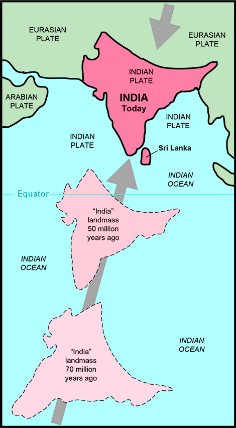
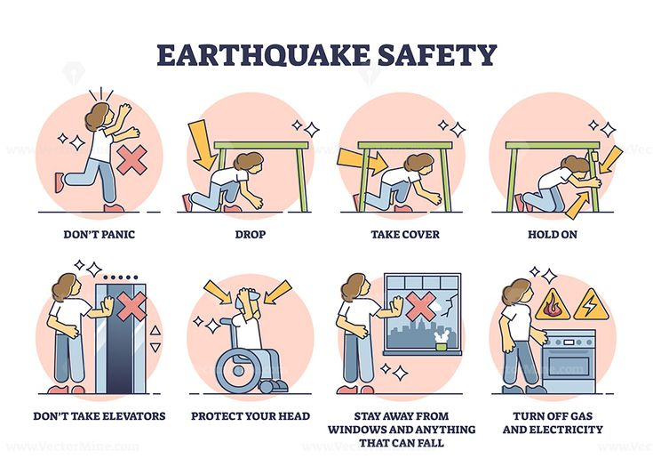
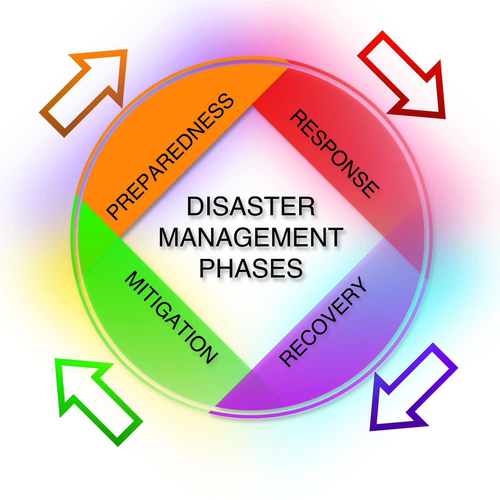

Number of modules: 2
Complete all the modules to earn badges


No progress!

An earthquake is when the ground shakes suddenly. This happens because energy that was trapped inside the Earth is released all at once. The energy spreads as waves, which can make buildings, roads, and bridges shake or even break. That’s why earthquakes can sometimes cause big damage. It’s like the Earth is releasing its pressure in a very strong way.
Most earthquakes happen because large blocks of rock move and slide past each other along a crack in the Earth called a fault. The exact place deep inside the Earth where the earthquake begins is called the hypocenter (or focus). The spot on the ground directly above it is called the epicenter. The epicenter is usually where the shaking feels the strongest.

Earthquakes can occur anywhere in the world, but they are more common in places where the Earth’s tectonic plates meet. These plates are always moving, and the stress between them leads to earthquakes. Learning about earthquakes is very important, because it helps people stay prepared and safe. By knowing what causes them, we can reduce risks and respond better when they happen.

Hey, do you know the Earth’s surface is not one big piece? It’s actually made of huge pieces called tectonic plates. These plates are like giant puzzle pieces that fit together and cover the Earth. They are always moving, but very slowly, so we don’t feel it every day. Sometimes they push, pull, or slide against each other. When this happens, the Earth’s surface changes, and that’s when earthquakes often happen.
There are three main ways these plates move. When they collide with each other, it’s called a convergent boundary, and it can even form mountains. When they move apart, it’s called a divergent boundary, and new land or ocean floor can appear. When they slide past each other sideways, it’s called a transform boundary, and this can cause sudden, strong earthquakes. These movements are super important for shaping the Earth.


Now, let me tell you about faults. A fault is like a big crack in the Earth’s crust. When rocks on both sides of the crack move or slip, an earthquake happens. Imagine snapping a ruler—it suddenly breaks because of too much pressure. The same way, faults break or slip when there’s too much stress from the moving plates. That’s why earthquakes mostly happen near plate boundaries and faults.

When an earthquake happens, it sends out something called seismic waves. These are like ripples or vibrations that travel through the Earth. They are the reason we feel the ground shaking during an earthquake. Scientists study these waves to understand how strong the earthquake is and where it started. There are mainly two big groups: body waves and surface waves.
Body waves move through the inside of the Earth. There are two types here: P-waves and S-waves. P-waves (primary waves) are the fastest, and they can travel through solids, liquids, and gases. They push and pull the ground, kind of like how a slinky toy moves back and forth. S-waves (secondary waves) are slower, but they move the ground side to side or up and down, and they only travel through solids.


Then we have surface waves, which travel along the Earth’s surface. These waves are usually the ones that cause the most damage during an earthquake because they make the ground shake strongly. There are two types: Love waves, which shake the ground side to side, and Rayleigh waves, which make the ground move in a rolling motion like ocean waves. Even though they are slower than body waves, they are very destructive.

When an earthquake happens, scientists measure it in two main ways: magnitude and intensity. Magnitude tells us how strong the earthquake really is at its source. It’s measured using special instruments called seismographs. The most common scale is the Richter scale, where each number means the quake is 10 times stronger than the one before it. For example, a magnitude 6 quake is much stronger than a magnitude 5.
On the other hand, intensity tells us how much shaking and damage people actually feel in different places. It does not stay the same everywhere, because some areas closer to the epicenter feel stronger shaking than areas farther away. Scientists use the Modified Mercalli Intensity (MMI) scale to describe intensity, which goes from I (not felt) to XII (total destruction). So, intensity is about the effect, while magnitude is about the energy.

You can think of it this way: if an earthquake is like a light bulb, then magnitude is how powerful the bulb is, and intensity is how bright the light looks to you depending on where you are standing. Both are important for understanding earthquakes. Magnitude tells us the true size of the quake, while intensity shows the real experience of people and places. Together, they help scientists and communities prepare better for future earthquakes.

Did you know that earthquakes don’t happen the same everywhere on Earth?Some parts of the world are more at risk because they are near the boundaries of moving tectonic plates. These areas are called earthquake zones. The most famous one is the Ring of Fire around the Pacific Ocean, where countries like Japan, Indonesia, Chile, and the west coast of the USA often face strong earthquakes. Other high-risk regions include the Himalayas, the Middle East, and southern Europe.
Now, let’s talk about India. Our country also has many earthquake-prone areas because it lies on the boundary of the Indian Plate and the Eurasian Plate. The collision of these plates created the Himalayas, which is why the northern part of India, especially states like Jammu & Kashmir, Himachal Pradesh, Uttarakhand, and parts of the northeast, face frequent and strong earthquakes. Even some parts of Gujarat and Bihar are in high-risk zones.
In India, earthquake zones are divided into four categories: Zone II, Zone III, Zone IV, and Zone V. Zone V is the most dangerous, covering areas like the northeast, parts of the Himalayas, and the Andaman & Nicobar Islands. Zone IV also includes places like Delhi, Gujarat, and parts of Bihar. Knowing about these zones helps people prepare better. It reminds us that earthquakes are natural, but with awareness and safety steps, we can reduce the risks.
When an earthquake happens, it can come suddenly without warning. That’s why it’s very important to be prepared before it strikes. One of the best ways to prepare is by keeping an emergency kit ready. This kit should have things like water, food, a flashlight, batteries, a first aid box, and important documents. Having these items in one place helps us survive the first few days after a strong earthquake.
Along with a kit, we also need an emergency plan for our family. This means deciding what to do and where to meet if an earthquake happens. For example, we should know the safest spots in the house, like under a strong table or near an inside wall. We should also practice “Drop, Cover, and Hold On” so that we don’t panic. If everyone in the family knows the plan, it will be easier to stay safe.
Schools and communities also make emergency plans to help more people at once. Teachers guide students on evacuation drills and safe places to gather. Families and neighbors can also work together to check on each other after an earthquake. Being prepared doesn’t stop the earthquake, but it makes sure we know how to act and stay safe. That’s why emergency kits and plans are so important.
If an earthquake happens, the most important thing is to stay calm and act quickly. The best safety rule to remember is “Drop, Cover, and Hold On.” This means you should drop to the ground, take cover under a strong table or desk, and hold on until the shaking stops. If you can’t find cover, sit near an inside wall and protect your head with your arms. Staying away from windows, mirrors, and things that can fall is very important.
If you are outside during an earthquake, move to an open area away from buildings, trees, and power lines. These things can fall and cause injuries. If you are in a vehicle, stop in a safe place away from bridges, tunnels, or tall buildings and stay inside until the shaking ends. Never try to run during the earthquake, because you might get hit by falling objects.
After the shaking stops, check yourself and others for injuries. If you smell gas or see damaged wires, move to a safe place immediately. Use stairs instead of elevators in tall buildings. Always listen to official instructions on the radio or phone alerts. Remember, being alert and following safety measures can save lives during an earthquake. That’s why practicing these steps in schools and homes is so important.
When disasters like earthquakes, floods, or cyclones happen, it’s not just one person who is affected – the whole community can be in danger. That’s why community awareness is very important. If everyone in the community knows what to do before, during, and after a disaster, fewer people will get hurt. Awareness means learning about the risks and sharing that knowledge with others.
Communities can practice disaster drills together, like earthquake or fire drills. They can also make emergency plans, safe gathering places, and warning systems. For example, if a village knows it is in a flood-prone area, people can build houses on higher ground and keep boats ready. When everyone works together, it is easier to reduce the damage and protect lives.
This is called Disaster Risk Reduction (DRR), which simply means taking steps to reduce the dangers of disasters before they happen. It includes things like stronger buildings, better planning, and teaching people safety rules. When a community is prepared, they can respond quickly and recover faster. That’s why awareness and teamwork are the keys to staying safe during disasters.